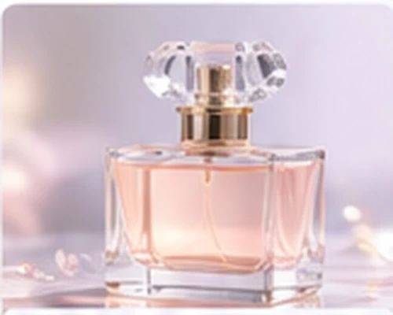
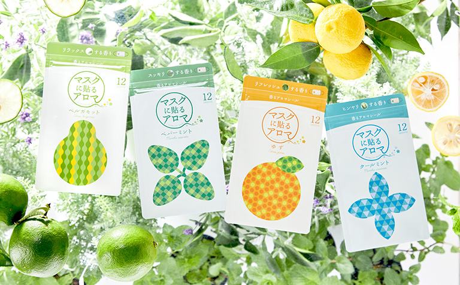
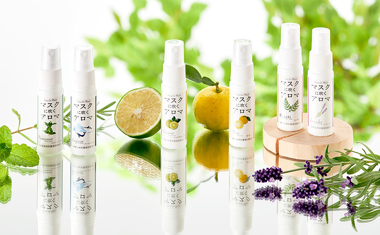

香りから始まる、新しい可能性。
SCROLL TO DISCOVER ↓01 / ABOUT目には見えない。
目には見えない。
でも、暮らしを変えられる。
FRESH / フレッシュ
ESSENCE / 精油

BEAUTY / 香粧品BEYOND THE FRAGRANCE
天然素材を知ること。
香りを組み立てること。
さまざまな製品の可能性を広げること。
感性と技術を重ねながら、
香りの新たな価値を届けます。
02 / ORIGINAL PRODUCTS香りをもっと、
香りをもっと、
いつもの毎日へ。
香りの専門メーカーとしての知見を、
毎日のマスク時間に取り入れた自社製品です。

01 / AROMA STICKER
↗マスクに貼るアロマ
100%天然アロマオイルを使った、香るアロマシール。全4種・12枚入り。

02 / AROMA SPRAY
↗マスクに吹くアロマ
スリムボトルで携帯しやすい、マスク用スプレー。全6種・25ml入り。
※商品画像は山本香料株式会社の現行公式サイト掲載素材を使用しています（2026年11月6日取得）。
01 / 05SCROLL / DRAG
THE SCIENCE BEHIND SCENT
04 / TECHNOLOGY感性を、
感性を、
確かな技術に。
香りづくりの背景には、調香と研究開発があります。
分析・調合・品質管理まで、一つひとつ丁寧に向き合います。
RESEARCH / DEVELOPMENT
研究設備について ↗